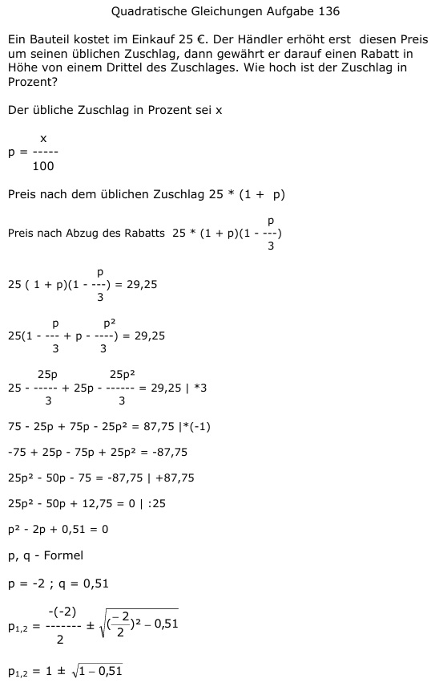

Aufgabe 136 Ein Bauteil kostet im Einkauf 25 €. Der Händler erhöht erst diesen Preis um seinen üblichen Zuschlag, dann gewährt er darauf einen Rabatt in Höhe von einem Drittel des Zuschlages. Wie hoch ist der Zuschlag in Prozent? Der übliche Zuschlag in Prozent sei x x p = ----- 100 Preis nach dem üblichen Zuschlag 25 * (1 + p) Preis nach Abzug des Rabatts p 25 * (1 + p)(1 - ---) 3 p 25 ( 1 + p)(1 - ---) = 29,25 3 p p2 25(1 - --- + p - ----) = 29,25 3 3 25p 25p2 25 - ----- + 25p - ------ = 29,25 |*3 3 3 75 - 25p + 75p - 25p2 = 87,75 |*(-1) -75 + 25p - 75p + 25p2 = -87,75 25p2 - 50p - 75 = -87,75 +87,75 25p2 - 50p + 12,75 = 0 |:25 p2 - 2p + 0,51 = 0 p, q - Formel p = -2 ; q = 0,51  p1,2 = 1 ± 0,7 p1 = 1 + 0,7 = 1,7 --> p = 170% keine Lösung, größer als 100% p2 = 1 - 0,7 = 0,3 --> p = 30%